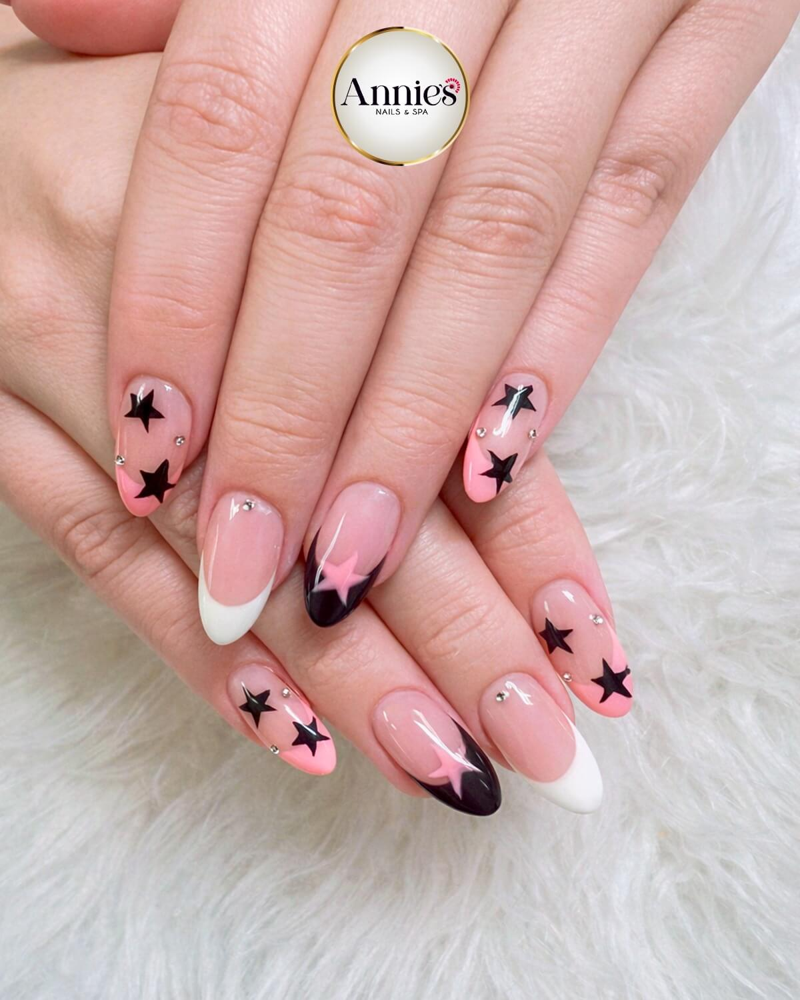

How to Choose the Right Nail Salon in Odessa TX
Choosing the right nail salon in Odessa TX is important if you want both quality service and a relaxing experience. Not all salons provide the same level of care, so knowing what to look for can help you make the right decision.
A good nail salon should feel clean, welcoming, and professional from the moment you walk in. Clients should feel comfortable, respected, and confident in the service they receive.
Look for Cleanliness and Hygiene
A clean nail salon is one of the most important things to check first. Tools should be sanitized properly, stations should be neat, and the overall salon should feel fresh and organized.
Check Experience and Reviews
Experienced technicians can make a big difference in your results. Reading customer reviews and looking at real nail photos can help you choose a trusted salon in Odessa TX.
Consistent Quality Matters
A good nail salon should provide consistent results every time. Clients should feel confident returning because they know what to expect on each visit.
Choose a Salon That Fits Your Style
Some clients prefer natural nails, while others enjoy bold colors, trendy designs, or long-lasting finishes. The right salon should be able to match your style and preferences.
At Annie's Nails & Spa, clients enjoy a friendly atmosphere, detailed nail work, and a local salon experience focused on comfort and quality.
View our full nail services in Odessa TX
2613 N Grandview Ave, Odessa, TX 79761
Phone: (432) 299-9999